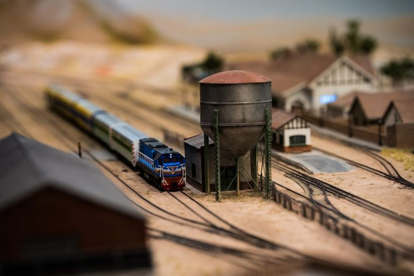

N Scale Versus HO in a Small Room
The scale argument is really a room argument wearing a costume. What the room can hold usually settles it before taste gets a vote.

Every online argument about N scale versus HO eventually turns into an argument about coupler types, the character of a rivet-counted boxcar door, or which scale "feels" more like a real railroad. None of that is where the decision actually gets made. It gets made earlier, with a tape measure, against a wall that isn't going anywhere — the specific rectangle of floor a builder actually has, with the actual door swing, the actual radiator nobody wants to move, and the actual eight feet between the closet and the window. Scale is a taste question right up until a room says otherwise, and in a spare bedroom or a garage corner, the room usually says otherwise first.
The debate that skips the measuring tape
Ask "which scale is better" in most hobby forums and you'll get a ranking, as if one scale were objectively superior and the other a compromise for people with lesser rooms. That framing gets the order of operations backward. The honest question isn't which scale is better in general — it's what a specific room, at its specific dimensions, will actually support running well. A scale that looks cramped and apologetic in one room can look completely at home in another, and the difference has nothing to do with taste. It has to do with three numbers most people never write down before they buy track: minimum radius, usable siding length, and aisle width.
What the radius difference actually buys
Radius is where the two scales part ways fastest. A comfortable HO curve — one that doesn't visibly strain longer steam or passenger equipment — tends to sit around 24 inches, with 18 inches treated as a tight minimum for shorter stock. N scale gets the same comfortable look at roughly 15 inches, with 11 inches or so workable for shorter equipment. That six-to-nine-inch gap doesn't stay a small number once it becomes benchwork. A curve needs the radius itself plus clearance to the wall and any adjoining scenery, so an HO curve at 24 inches can easily need 28 to 30 inches of shelf depth to look right, where the equivalent N scale curve needs closer to 18 to 20. On a wall that's only 30 inches deep to begin with, that difference is the entire margin between a curve that clears the doorway trim and one that doesn't. This is the same math covered in more depth in what minimum radius really costs you in a spare room — the radius number on the box is never the number that actually fits.
Siding length is the same argument in different clothes
The radius conversation gets the attention, but siding length quietly does just as much work. Three feet of benchwork is three feet of benchwork regardless of scale, but what fits inside it is not. A 40-foot boxcar models out to roughly 5.5 inches in HO and about 3 inches in N, so the same three-foot siding holds four or five cars in HO and closer to eight or nine in N. That's not a cosmetic difference — it changes how many switching moves a session can support, how believable a "full" industry track looks, and whether a small layout has room for the kind of siding described in the siding that earns its space, one that does a real job instead of sitting there because a gap needed filling. A room too small for a working HO industry spur can sometimes hold a fully believable N scale one, on the identical footprint.
Nobody chooses a scale wrong. They choose a radius the room can't actually hold, and discover only later that the scale was never the problem.
Aisle width is the constraint nobody drafts for
Track plans get drawn to the edge of the benchwork and stop there, which quietly assumes the rest of the room takes care of itself. It doesn't. A single operator needs something like 24 to 30 inches of clear aisle to work comfortably without turning sideways at every reach; two people passing, or one person carrying a rerailed car back to a yard, wants more than that. In an eight-by-ten room, an aisle at the generous end of that range can eat a third of the available floor before a single inch of benchwork gets drawn. Because HO's deeper curves push benchwork further into the room, it's usually HO that runs into this wall first — the same room that leaves a comfortable 30-inch aisle around an N scale shelf can force a 20-inch squeeze once the benchwork gets the extra depth HO curves ask for.
Before comparing scales at all, it helps to write those constraints down as three numbers specific to the room, not to either scale in the abstract:
- The radius the deepest available shelf can actually hold, with clearance to the wall already subtracted
- The siding length the footprint can spare, and how many cars that length needs to hold before an industry track looks worked rather than token
- The aisle width left over once benchwork claims its depth, checked at the tightest corner of the room, not the widest one
Only once those three numbers exist does "N or HO" become a question with an actual answer, instead of a taste debate nobody brought a ruler to.
Same room, two different plans
Put those three numbers next to each other for one concrete room — eight feet by ten feet, a fairly ordinary spare-room size — and the pattern is easier to see than any forum debate makes it look.
| Constraint | HO in an 8×10 room | N in the same room | What it changes |
|---|---|---|---|
| Comfortable minimum radius | ~24 in, ~28–30 in of shelf depth | ~15 in, ~18–20 in of shelf depth | 10 in or more of depth returned to the aisle or a second shelf |
| What 3 ft of siding holds | ~4–5 forty-foot cars | ~8–9 forty-foot cars | Roughly doubles the switching moves in the same footprint |
| Workable single-operator aisle | Often squeezed to 20–24 in | 30 in or more usually survives | Comfort and safety walking the layout during a session |
| Around-the-walls run length | Roughly 24–28 ft achievable | Roughly 38–44 ft achievable | More distance before the same train reappears at the same point |
| Visual character at that radius | Long steam or passenger stock can look strained | Same equipment tracks smoothly | A taste question — but only once the physical one clears |
A quick gut check before buying anything
Measure the actual bench footprint the room allows, subtract a comfortable aisle from it, then check what radius fits along the remaining depth with roughly two inches of clearance to the wall. If that radius sits well below either scale's comfortable minimum, the room is telling you something taste never will. Do this before track gets ordered, not after a curve refuses to fit.
None of this makes N scale the correct answer for small rooms, or HO the wrong one. Plenty of HO layouts thrive in eight-by-ten rooms by trading run length for a simpler plan, and plenty of N scale layouts sit half-empty because detail work at that size asks for patience the builder didn't budget for. The point isn't that one scale wins. It's that the argument usually gets settled by the shape of the benchwork a room can actually hold, long before anyone gets to debate which scale looks more convincing running a freight.
Worth remembering
The dimensions above are typical figures drawn from commonly published radius and clearance guidance for an ordinary spare-room footprint, not a fixed formula for any specific space. Benchwork style, the equipment you plan to run, and how much you value a wide aisle over a longer mainline will all shift these numbers somewhat — treat this as a way to frame the comparison for your own room, not a substitute for measuring it.